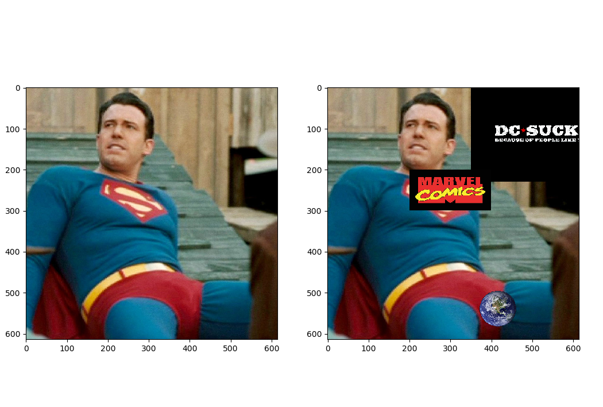
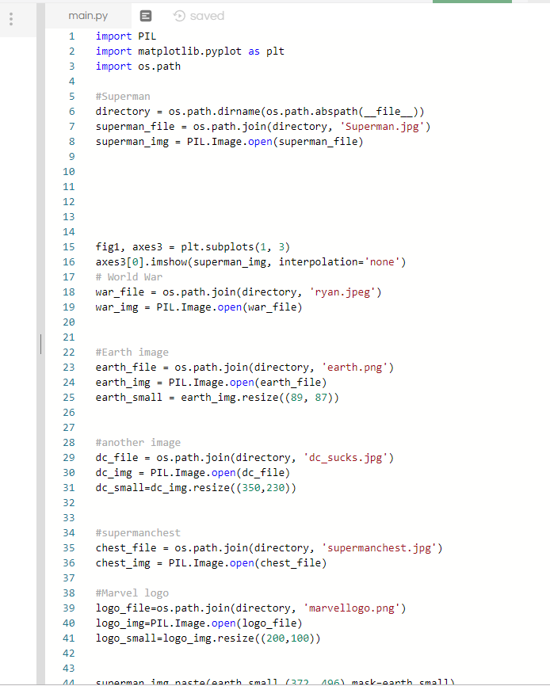
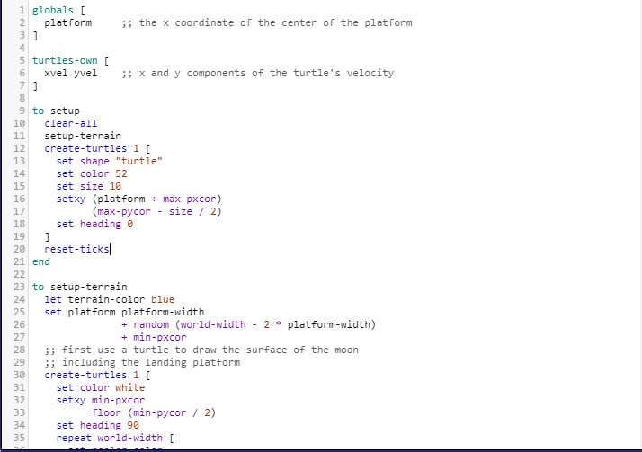
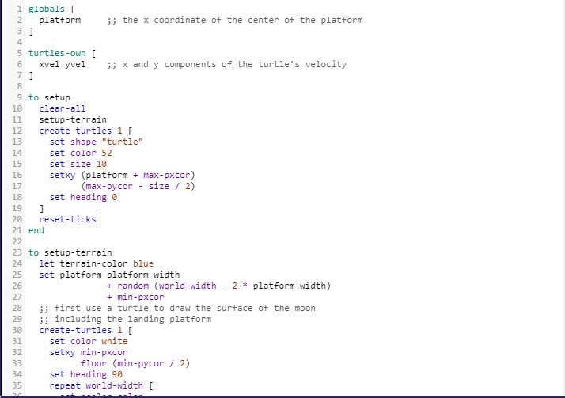

My Scratch Game!
In this game, use the arrow keys to move, up arrow to jump, and space to start.
Just hit the bricks to go through the game.
My MIT App Inventor Game
This app works on the android, and it allows you tp play tic tac toe.
Some flaws include having to double tap for the 'O' button, and when there is a winner, it isn't announced.
Survival Game
The point of this interactive is to choose the smart decisions to survive and get off the stranded island.
Click on me to play!
States and Capitals Game
Practice your knowledge of your states and capitals !!
Click on me to play
iPython Image
We edited a picture of superman to include other images on top for the laughs


Graph on Python
This graph shows the percentage of what sports each gender plays.
Netlogo Game
We took the Lunar Lander Game and added some edits, such as replacing the lander with a turtle, adjusting different colors of the game, and taking away all the gravity of the game.

 
